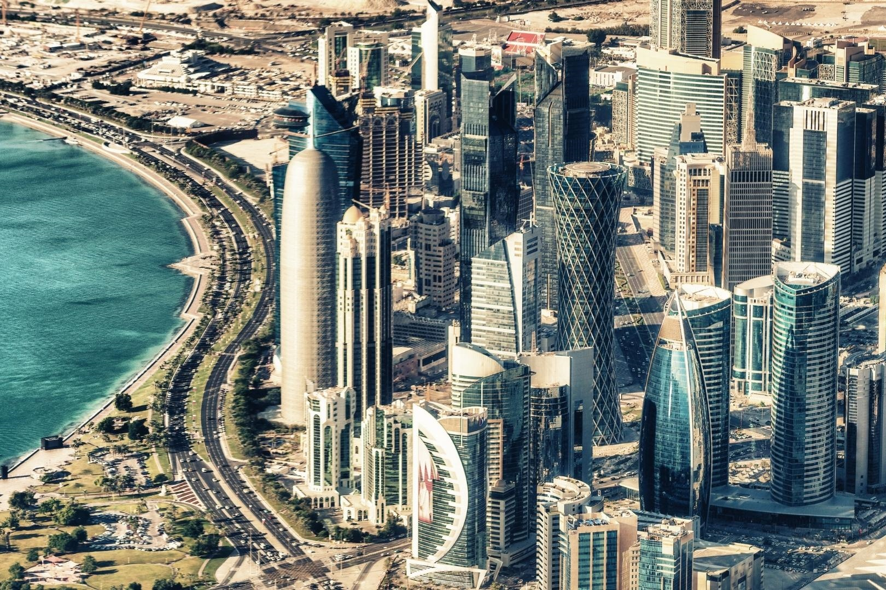

Seja bem vindo ao Catar

Catar, ou Qatar, é um país localizado na Ásia Ocidental, na Península Arábica (península é uma extensão de terra cercada por água em quase todos os lados), e estende-se até o norte do Golfo Pérsico. O país é considerado um emirado, tendo seu território administrado por um membro da classe dominante, no caso um emir. É uma das nações mais ricas do mundo.
